Example based on the consumption-savings in infinite-horizon with a permanent-income-shock (and no borrowing constraint).
The example is made more complicated that the basic infinite-horizon consumption-savings by the stochastic permanent income shocks. Example suggested by Chris Carroll, and taken from Carroll (2019) - Theoretical Foundations of Buffer Stock Saving
The original model is 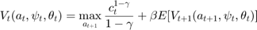 subject to 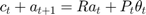  where 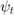 is iid log-normally distributed, and 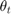 combines a mass-point at zero (unemployment) with 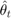 which is iid log-normally distributed (more explicit description below).
where 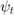 is iid log-normally distributed, and 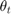 combines a mass-point at zero (unemployment) with 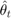 which is iid log-normally distributed (more explicit description below).
So 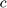 is consumption; 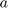 is assets; 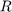 is the interest rate; 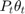 is earnings. Notice that earnings contains a permanent component, 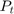, and a transitory component , and that the permanent component growths at a combination of a deterministic growth rate 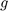 and a permanent shock .
In it's current form the value function depends on time, but if we just divide the state space in time t by the permanent income then it turns out there is a time independent value function in the resulting space. Doing this also affects the discount rates. Carroll (2019) provides proof for this model, intuition (complex stochastic version) of the same logic when doing this in Ramsey growth model (Solow growth model but making the consumption-savings problem a choice).
The normalized model is 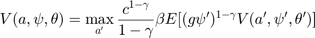$ subject to 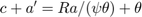 where the prime (') indicates next period. There are two ways to think of the 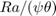 term: that is denominated in last period units and so 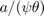 is adjustment into this period units, or that is in this period units, and 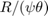 is the growth-adjusted return on assets.
The precise setup for the shocks is as follows:
- Permanent shock 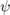 is log-normally distributed as: 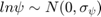
- Transitory shock 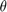 is distributed as follows: 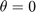 with probability 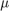 and 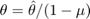 with probability 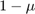, where 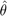 is log-normally distributed as 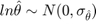
Contents
- Because of the permanent shocks entering the discount factor, we need to use the following vfoptions
- Grid sizes:
- Declare the model parameters
- Create the grids
- Set up the 'exotic preferences' to be used (3: discount factor depends on exogenous state)
- Set up the return function
- Do the value function iteration
- Some further comments on this setup, not needed for computations above, but may be of interest
Because of the permanent shocks entering the discount factor, we need to use the following vfoptions
vfoptions.exoticpreferences=3; % The discount factor depends on next period exogenous state
Grid sizes:
n_a=101; % Grid for assets n_psi=5; % Grid for multiplicative permanent income shock n_theta=7; % Grid for transitory income shock n_z=[n_psi, n_theta];
I have deliberately chosen grids that likely to not have enough points so that this example can be easily and quickly run on older machines.
Declare the model parameters
Params.g=1.03; % Permanent income deterministic growth rate Params.R=1.04; % Interest rate Params.beta=0.96; % Time preference factor Params.gamma=2; % Coefficient of relative risk aversion % The exogenous shocks are both just iid Params.sigma_psi=0.01; % Standard deviation of log permanent shock Params.sigma_theta=0.01; % Standard deviation of log transitory shock % But theta is modified to allow a zero value ('unemployment') with some probability Params.theta_probunemp=0.005; % Probability of unemployment (called $\mu$) above Params.theta_unemp=0; % Income when unemployed
Create the grids
a_grid=linspace(0,15,n_a)'; tauchenq=2; % Create the grids for psi [psi_grid, pi_psi]=TauchenMethod(0,Params.sigma_psi^2,0,n_psi,tauchenq); % First zero is the mean, second zero is the autocorrelation psi_grid=exp(psi_grid); % Create the grids for theta [thetahat_grid, pi_theta]=TauchenMethod(0,Params.sigma_theta^2,0,n_theta-1,tauchenq); % First zero is the mean, second zero is the autocorrelation theta_grid=[0; exp(thetahat_grid)/(1-Params.theta_probunemp)]; % Include the unemployment state, and normalize (divide by (1-Params.theta_probunemp)) to ensure E(theta)=1. pi_theta=[pi_theta*(1-Params.theta_probunemp),Params.theta_probunemp*ones(n_theta-1,1); pi_theta(1,:)*(1-Params.theta_probunemp),Params.theta_probunemp]; % The rows are all identical as iid (hence why the final row is created by adding a copy of row 1) % Put the exogenous grids and the transition matrices together z_grid=[psi_grid; theta_grid]; pi_z=kron(pi_theta, pi_psi); % Is always kron() of shocks in reverse order
Note: there will be a tiny numerical error introduced as neither exp(psi_grid) nor exp(thetahat_grid) will be exactly 1 in expectation. You could easily fix by normalizing these. For this example I prefer to leave them as is as a 'cautionary example' of common but obscure mistakes.
Set up the 'exotic preferences' to be used (3: discount factor depends on exogenous state)
Params.ggamma=Params.g^(1-Params.gamma); Params.psigamma=reshape(psi_grid.*ones(1,n_theta),[1,n_psi*n_theta]).^(1-Params.gamma); % Depends on zprime (next period z), and hence based on psi_grid' DiscountFactorParamNames={'beta','ggamma','psigamma'}; % The 'state-dependent discount parameters'
Note: VFI Toolkit allows for these discount factors to be a matrix, so they would depend on both this period and next-period exogenous state. If you pass a vector it is assumed the dependence is on next-period exogenous state if the vector has just one row and multiple columns; dependence on this-period exogenous state if the vector has multiple rows and one column.
Set up the return function
ReturnFn=@(aprime,a,psi,theta,R,g,gamma) MultiplicativePermanentIncomeShocks_ReturnFn(aprime,a,psi,theta,R,g,gamma)
ReturnFnParamNames={'R','g','gamma'};
ReturnFn =
function_handle with value:
@(aprime,a,psi,theta,R,g,gamma)MultiplicativePermanentIncomeShocks_ReturnFn(aprime,a,psi,theta,R,g,gamma)
Do the value function iteration
vfoptions.verbose=1;
V0=zeros(n_a,n_z(1),n_z(2),'gpuArray');
[V, Policy]=ValueFnIter_Case1(V0, 0,n_a,n_z,0,a_grid,z_grid, pi_z, ReturnFn, Params, DiscountFactorParamNames, ReturnFnParamNames, vfoptions);
vfoptions =
struct with fields:
exoticpreferences: 3
verbose: 1
solnmethod: 'purediscretization'
parallel: 2
returnmatrix: 2
lowmemory: 0
tolerance: 1.0000e-09
howards: 80
maxhowards: 500
polindorval: 1
policy_forceintegertype: 0
piz_strictonrowsaddingtoone: 0
Creating return fn matrix
Time to create return fn matrix: 0.0896
Starting Value Function
Time to solve for Value Fn and Policy: 2.8872
Transforming Value Fn and Optimal Policy matrices back out of Kronecker Form
Time to create UnKron Value Fn and Policy: 0.0019
Some further comments on this setup, not needed for computations above, but may be of interest
We have here solved the renormalized value function. The VFI Toolkit codes for computing the stationary distribution of agents and the general equilibrium could also be used to find the normalized solutions. The time series simulations could then be used, and since they would automatically include simulated values for the and shocks, and since is known, it would be trivial to generate versions of this that did not include the normalization (that is, e.g., simulated time series data for the original model); in fact, judicious definition of the variables to simulate would do this directly.
The actual distributions of and are unimportant, but that ![$E[\psi_t]=1$](MultiplicativePermanentIncomeShocks_eq00317388935928422232.png) and 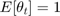 are important. As is that the supports of both and are bounded (untrue in principle of the log-normal, but we will use quadrature, so will be true in actual computed example). Notice that both of these shocks are normalized so the mean equals one assumptions are made without loss of generalization (the mean of could be moved to , and of could be moved into 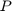). It is needed for the underlying theory in Carroll (2019).
and 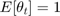 are important. As is that the supports of both and are bounded (untrue in principle of the log-normal, but we will use quadrature, so will be true in actual computed example). Notice that both of these shocks are normalized so the mean equals one assumptions are made without loss of generalization (the mean of could be moved to , and of could be moved into 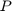). It is needed for the underlying theory in Carroll (2019).
While the model is here solved as having three states (one endogeneous state a, and two exogenous states and ) in principle you can rewrite the problem as having a single state (the buffer savings stock), and from the perspective of deriving theoretical results this is useful and is the approach taken in Carroll (2019). From the perspective of solving the model using the VFI Toolkit it is much easier to impose the clear distinction between exogenous and endogenous variables. Adding further complications to the model would also break the ability to reduce the model to a single state (the buffer savings stock), and so distinguising them as done here would then become necessary.